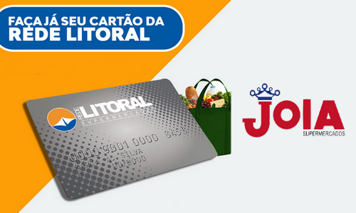

REDE LITORAL
Fundada em 30 de junho de 1999 a REDE LITORAL que tem como Razão Social a denominação: Associação de Supermercados do Litoral Paulista, tem hoje 19 associados em todo o Litoral Paulista, levando ao consumidor os mais variados produtos com os melhores preços e prazos de pagamento.
A Rede foi criada com o objetivo de melhorar a negociação com os fornecedores trazendo sempre uma variedade maior de produtos e buscando o menor preço para os consumidores.
São aproximadamente 2.200 funcionários que ocupam uma área de 30 mil metros quadrados. Temos ao todo, 290 Check-outs (caixas) para atender toda a demanda gerando empregos diretos.
A Rede Litoral de Supermercados é um exemplo de que, com união, trabalho e dedicação é possível alcançar o sucesso.
O cartão REDE LITORAL é aceito em todas as 34 lojas filiadas na REDE LITORAL e o supermercado Jóia é uma das lojas que você cliente pode fazer o cartão e também suas compras. Com o cartão REDE LITORAL você tem até 45 dias para pagar sua fatura, parcelar em 2 vezes s/juros e muito mais vantagens. O objetivo principal dessa união é o de proporcionar um melhor atendimento ao consumidor, que assim tem a sua disposição uma maior variedade de mercadorias à preços imbatíveis e melhor prazo de pagamento. A Rede Litoral de Supermercados é um exemplo de que, com união, muito trabalho e dedicação, o sucesso é inevitável.
